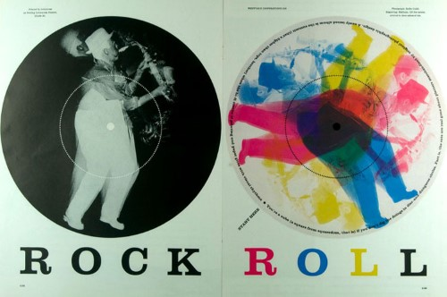

The nineteen-sixties were a vibrant time in the world of design in which increasing internationalism and experimentation flourished. This website pays tribute to some of the great designers and landmark design moments of that pivotal and unforgettable decade.